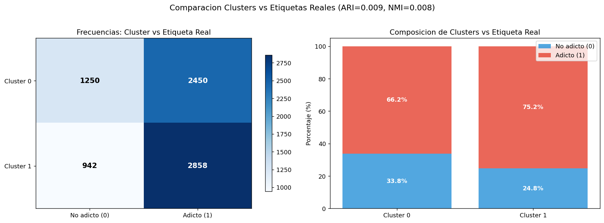
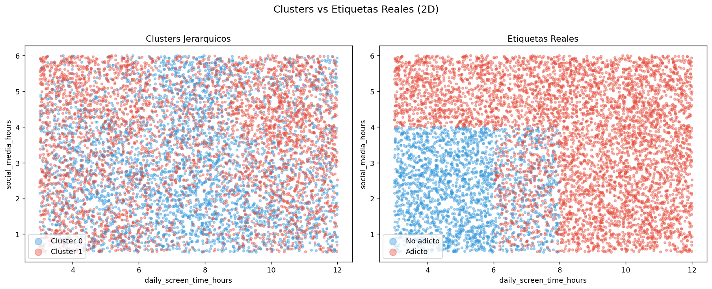

Gráficas¶
A continuación se presenta una recopilación de todas las visualizaciones generadas a lo largo del ciclo de vida del dato.
Fase I: Preprocesamiento y Análisis Exploratorio de Datos (EDA)¶
1. Mapa de Valores Faltantes¶

2. Distribuciones Numéricas¶

3. Distribuciones Categóricas¶

4. Correlaciones Lineales y Monótonas¶

5. Relación Numérica vs Variable Objetivo¶

6. Detección de Valores Atípicos (Outliers)¶

7. Variables Categóricas vs Variable Objetivo¶

8. Distribución de Variables por Grupo de Adicción¶

9. Pairplot de Variables Clave¶

10. Distribución de Valores Faltantes vs No Faltantes¶

11. Nivel de Adicción (Variable Original) vs Variable Objetivo¶

12. Importancia Relativa por Paso (Stepwise Forward)¶

13. Evolución del Criterio AIC¶

14. Correlaciones del Dataset Final¶

Fase II: Modelización Supervisada¶
15. Curvas ROC Combinadas¶

16. Matrices de Confusión¶

17. Comparativa de Métricas de Test¶

18. Importancia de Variables (Random Forest Gini)¶

19. Curvas de Aprendizaje (Learning Curves)¶

20. Compromiso Sesgo-Varianza por Modelo¶

21. Distribución de Probabilidades Predichas¶

Fase III: Aprendizaje No Supervisado (Clustering)¶
22. Dendrogramas (Comparativa de Enlaces)¶

23. Puntuación Silhouette por Valor de k¶

24. Perfiles Radiales/Líneas de los Clusters¶

25. Distribuciones por Cluster (Boxplots)¶

25b. Clusters vs Etiquetas Reales de Adicción¶

26. Proyecciones 2D de Clusters¶

26b. Proyecciones 2D (Clusters vs Etiquetas Reales)¶

27. Diagrama de Silueta Individual (k=6)¶

Fase IV: Interpretación y Conclusiones¶
28. Diagnóstico de Residuos (Regresión Logística)¶

29. Test de Bondad de Ajuste (Hosmer-Lemeshow)¶

30. Importancia por Permutación (Permutation Importance)¶

31. Comparativa de Importancia (Gini vs Permutación)¶

32. Razones de Probabilidad (Odds Ratios)¶